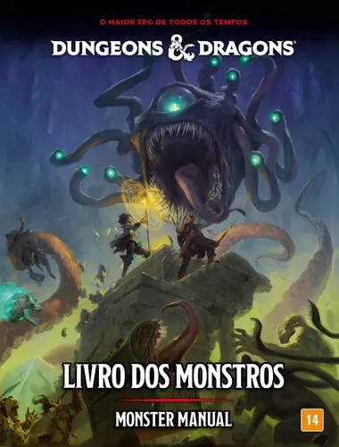

A historia do inicio do RPG de mesa se da originariamente em 1974 com o lançamento de Dungeons & Dragons (D&D), criado por Gary Gygax e Dave Arneson.
"(menção honrosa a Jeff Perren e M.A.R. Barker)"
Entre eles o mais geralmente conhecido como o pai dos RPGs Dungeons & Dragons (D&D). que detem e já vendeu mais de US$ 1 bilhão em livros e acessórios ao longo de sua história, com sua dona, a Wizards of the Coast, faturando mais de US$ 1,17 bilhão anualmente unindo suas principais marcas.
E como foi o primeiro RPG de mesa a ser criado (em 1974), ele definiu a base de tudo. Conceitos cotidianos hoje, como "subir de nível", "pontos de vida" (HP), "classes de personagem" (Guerreiro, Mago, Ladino) e a rolagem de dados para ver se um ataque acerta, foram inventados ou popularizados por D&D.
